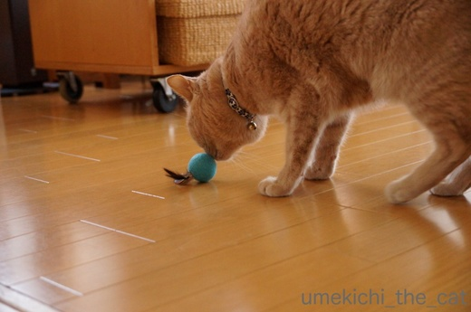
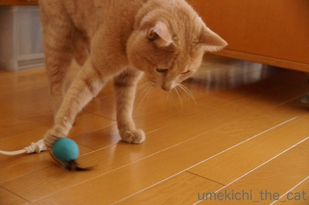
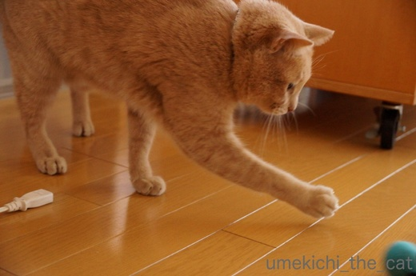
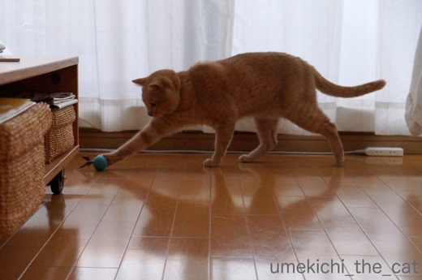
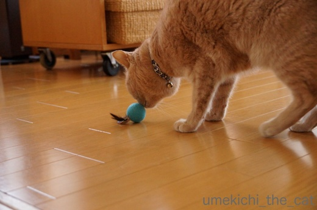
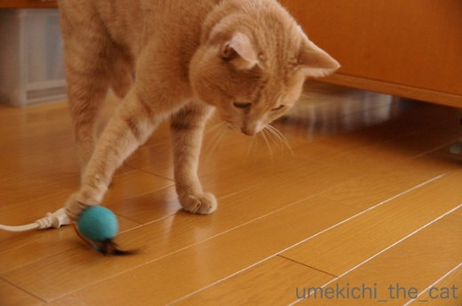
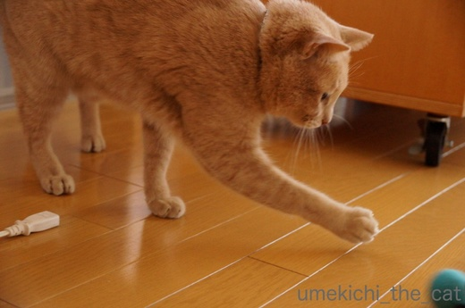
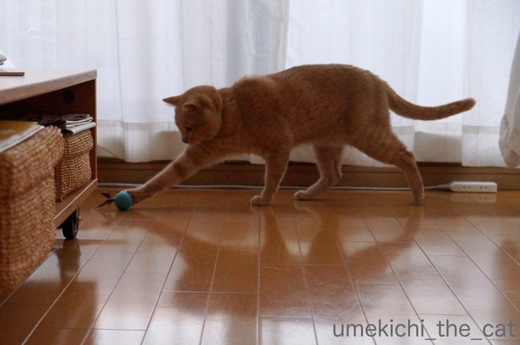

無視されなければOK [梅吉]
ウールボールの猫おもちゃを見つけたので買ってみました。

![[猫]](https://blog.ss-blog.jp/_images_e/101.gif) ふんふんふんふんふんふん
ふんふんふんふんふんふん

羽根突きの羽根みたいなかたちです。
ウールの匂いに興奮して食いつくとか思ったのですが
匂いにはあまり関心を示しませんでした。
でも、


ビシッ！


バッシッ！！



羽根がついてるのでコロコロと転がるのではなく
うねうねと不規則に転がるのが面白いみたいです。
大喜びではなかったけどこれくらい遊んでくれれば良し！
無視されなくて良かったわ(๑˃̵ᴗ˂̵)و
暖かくなったら俄然ベランダに出たがるようになりました。
気持ちよくって楽しくて、わけ分からん状態になってます(⌒_⌒;
 ↑ガブッと一押し↑
↑ガブッと一押し↑
お土産の全容。
そしてパイナップルケーキ。
台湾旅行記後編は来週アップしますねー。
おばちゃんの話は長いんですよ・・・(*>艸<)


羽根突きの羽根みたいなかたちです。
ウールの匂いに興奮して食いつくとか思ったのですが
匂いにはあまり関心を示しませんでした。
でも、


ビシッ！


バッシッ！！



羽根がついてるのでコロコロと転がるのではなく
うねうねと不規則に転がるのが面白いみたいです。
大喜びではなかったけどこれくらい遊んでくれれば良し！
無視されなくて良かったわ(๑˃̵ᴗ˂̵)و
暖かくなったら俄然ベランダに出たがるようになりました。
気持ちよくって楽しくて、わけ分からん状態になってます(⌒_⌒;
お土産の全容。
そしてパイナップルケーキ。
台湾旅行記後編は来週アップしますねー。
おばちゃんの話は長いんですよ・・・(*>艸<)

カフェオレ色の梅吉

梅吉 2023年8月10日 永眠


梅吉と出会った譲渡会

犬猫の理由なき殺処分ゼロ
妄想広告
UMEKICHI 光

爆発的に早い！
時々攻撃的！
Thanks to Mr.Boss365
爆発的に早い！
時々攻撃的！
Thanks to Mr.Boss365

梅吉さん♪
おててでチョイチョイと楽しめましたね♪
そしてベランダでのゴロゴロ！
気持ち良さそうですねぇ～(#^.^#)
パイナップルケーキ！！
年に何回かケン妹が作ってくれるので
美味しくいただいております♪
というか手作り以外食べたことがありません（笑
by きぃ (2018-03-16 16:17)
梅吉さんにヒゲが生えたのかと(^▽^;)
これだけ遊んでくれれば断然ＯＫ！！
ウチなんて気に入らなければ冷たい視線でガン無視ですもん・・・。
日当たりのよい広いベランダ、気持ちよさそう♪
梅吉さんと一緒にゴロンゴロン転げまわりたいです。
食材と調味料、買い込みましたね～読めないけど美味しそう(≧▽≦)
by ゆきち (2018-03-16 17:10)
最初の写真、羽が梅吉さんのヒゲに見えちゃいますね！
猫パンチ出していますね(^^)
by ma2ma2 (2018-03-16 18:02)
梅吉君の動画に笑った(笑)
ほんと、訳が分からない状態になった感じねｗｗ
気持ちよかったんだねー
羽付いてるおもちゃ、さいしょヒゲダンスやるのかと思っちゃったｗ
うちにもこういうのありました！
あまり喜んで貰えなくて、実家の猫にあげちゃった(笑)
そっちでもあまり喜んで貰えなかったの・・・^^;
by リュカ (2018-03-16 19:38)
１枚目の写真、ボールについた羽根が梅吉さんの髭に見えちゃいました(⌒-⌒; )
おぉ、梅吉さんったらダンディーな漢に*\(^o^)/*ってw
買ったおもちゃでこうやって遊んでもらえると嬉しいですよねぇ( ^ω^ )
うちは最近なかなかヒットがないです(*_*)
by ニッキー (2018-03-16 20:27)
ヒゲで変装？かと思っちゃいました＾＾；
梅吉さん、遊んでる遊んでる～♪
無視されなければオーケー、ありますね！
お天気が良いと、ゴロンゴロンしますよね～気持ちよさそう＾＾
by sana (2018-03-16 20:35)
私も梅吉さんにヒゲつけたのかと思い、似合うな~と感心してしまいました。
お土産は何なのかさっばりわからないので、旅行記の記事を楽しみにしてます。
by zombiekong (2018-03-16 21:53)
ゴロンゴロン梅吉さん、なんか気持ちよさそう♪ ^^)
コンクリートが温かいのでしょうか。
お土産、読めないのでよく分かりませんが
ハマグリとアサリ（のスープ？出汁？）は分かりました！
パイナップルって漢字でこう書くのですね。^^;
by yes_hama (2018-03-16 22:04)
日向ぼっこが気持ち良すぎて、
うねうねコロコロ、可愛いですね～＾＾
羽のついたボールは、転がり方が面白いですね。
あかりは、ボール遊びをよくしていた時期も
あったのですが、最近はボールを冷めた目で見ています。
なんでかなぁ…(￣▽￣)
by マーヤ (2018-03-17 01:24)
長男君もコンクリートの上でゴロンゴロンするのが大好きでした。
ポンポンとはたくと白い煙が出て面白かったなぁ＾＾；
by ぽちの輔 (2018-03-17 06:50)
ウールボール、可愛いから、カジカジされなくてよかったかも？
梅吉さんは、ベランダで春のごろんごろん祭りをお楽しみのようで♡
by のらん (2018-03-17 10:38)
梅吉さんのゴロンゴロンに春を感じます(^^;
猫さんも人も待っていた春が来て嬉しいんですね(^^)
by riverwalk (2018-03-17 11:45)
最初のお写真、
梅吉さん、新しいおひげをつけたのかと
思っちゃいました^m^
なんか、紳士みたいな感じで。
映像、楽しい♪
by ふにゃいの (2018-03-17 11:48)
梅吉君あったかくて気持ちいいんだろうな～。ナノも外に出るとゴロンゴロンしたがりますよ(*^_^*)
by palpal (2018-03-18 10:44)
わたしもヒゲダンスに見えました。あごひげまである・・・！（笑）
いや、とってもかわいいです。
なるほど、羽を挿すのか、それもアリですね。
わがやではただのボールですが、長女がウハウハで遊びます^^
しかし激しいな、ベランダ梅吉さん・・・
猪肉って、あっちでは豚肉、でしたっけ。
by Ja-Kou66 (2018-03-18 16:48)
ぴちぴち動き回る梅吉さん。かわいいのぉー。
活きがいい っ！！
羽付きボール。
くるさん家の、ボンあにぃお気に入りに似てるっ(^^♪
by morichan (2018-03-19 17:00)
きぃさん＞
ベランダは本当に気持ちよさそうにというか
怖いくらいにくりんくるんと転がります(^▽^;)
冬には絶対にしないので梅吉なりに春を感じ取っているようです＾＾
パイナップルケーキはケン妹さんの方が美味しいかもしれませんよー！
ゆきちさん＞
新しいおもちゃ買って４〜５日経ちましたが
もうすでにガン無視状態です(꒦ິ⌑꒦ີ)
また再び遊んでくれる日を夢見て
下僕はそっとおもちゃをしまいましたとさw
台湾の中国語は単語だけだとわからないのも多いのですが
商品を陳列している場所、パッケージの写真
知っている漢字からなんとなーく判断して買っています。
想像力を駆使して分かったような気になって楽しんでます♪
ma2ma2さん＞
皆さんにコメントいただいて写真を見直して・・・
「あ、ヒゲだ」と思いましたw
梅吉は頭で考えるよりまず猫パンチです♡
リュカさん＞
あんまり激しく転がって目もいっちゃってるので
ちょっと怖いんですよねー(^▽^;)
変なテンションの後はダダッと走り出すことが多いので
脱走注意！のサインでもありますw
ヒゲ、皆さんにコメントいただくまで思い至りませんでした。
立派なヒゲはあおくんのダリヒゲとも勝負できそうよ！
ニッキーさん＞
立派なヒゲは文明開化時の紳士のようでもあり
よく見るとあごひげが聖徳太子のようでもあり・・・
どちらにしても漢・梅吉の魅力を際立たせる
アイテムになっているようです(^_－)☆
ウールボールは久々に無視されないおもちゃでした！
下僕うれしい・・・（現在はガン無視されてますがw）
sanaさん＞
皆さんにコメントいただいてヒゲ・・・？
おおお〜本当だよく似合ってる！！と喜んじゃいましたw
日差しが暖かくて気持ちが良いって家の中にいても
わかるようなんですよね。
外に行く？と戸を開けると走り出てゴロンゴロン。
気持ちの良い季節はすぐ終わっちゃうから
今のうちに充分満喫してもらいたいです＾＾
zombiekongさん＞
そうそう！皆さんにコメントいただいて
ヒゲ・・・？おお！似合ってるじゃない！！
と喜んだ親バカ飼い主ですw
お土産は知っている漢字と商品を陳列している場所から
想像力を駆使して買いましたw
おいおい紹介していきますねー＾＾
yes_hamaさん＞
コンクリートが吸い込んだ熱と春の息吹にウキウキとして
テンション上がりまくりの梅吉です＾＾
ハイテンションすぎて怖い時もあるのですが・・・ (⌒_⌒;
スープの素はまだ開封していないのですが
おそらく粉末と思われます。
売り場と漢字から想像して買った商品が多いのですが
今の所「想像してたのと全然違う！」が無いのが嬉しいです＾＾
マーヤさん＞
ああ、あかりちゃんったら・・・
「おとなのあたちは こどものときのおもちゃは うれしくないのよ」
とでもおっしゃりたいのでしょうかーw
猫様あるあるでブーム再来に期待しましょう^^
ぽちの輔さん＞
なんと！白い煙が！！
梅吉も家に入れる前によく払うように致しますm(_ _)m
（すごく嫌がるけどw)
のらんさん＞
ウールボール、形も色の私の好みでしたー＾＾
オブジェとして飾っておこうかしら・・・
ええ、もう飽きて遊んでいないのですよ(꒦ິ⌑꒦ີ)
飾っておいても見向きもしないでしょう・・・・
riverwalkさん＞
もしも話せるのなら
「はるを ぜんしんで かんじるで！」と叫び出しそうな梅吉でした＾＾
ふにゃいのさん＞
みなさんにコメントいただいて「あ、おヒゲだ。」と気づきました。
左右対称のヒゲもできそうなので今度やってみようかな。
紳士っぷりがアップするかしらー＾＾
palpalさん＞
ナノくんも激しくゴロンゴロンするのかしら。
優雅にゴロンゴロンかな、ナノくんは＾＾
鳥のうんPとか落ちていそうなところで転がるので
阻止するのが大変ですwww
Ja-Kou66さん＞
あごひげ！聖徳太子の肖像画思い出しちゃいましたw
うめ吉のゴロンゴロンは勢いがすごいのですよ・・・
目もいっちゃてるし「気が触れちゃって無いよね」と
若干心配になります(^▽^;)
猪＝豚、蛋＝卵・・・一瞬へっ？と思いますが
何となく想像できるところが面白いです＾＾
morichanさん＞
ぴちぴち梅吉、鮮度抜群ですよＯ(≧▽≦)Ｏ
おひとついかがでしょうか？かじられますけどw
ああ！あのあにぃの荒ぶるアレですね！！
カメラを向けると落としちゃうので幻のアレですね！！！
by ちぃ (2018-03-19 18:37)
梅吉さんにヒゲが生えたのかと思いましたよ。
ピシッツ、パシッツと遊ぶ真剣さがいいですね。
動画のゴロンゴロンのスピード感はすごいですね。
最後の開脚前屈、身体が柔らかくて羨ましいぞ〜
by kiki (2018-03-19 21:45)